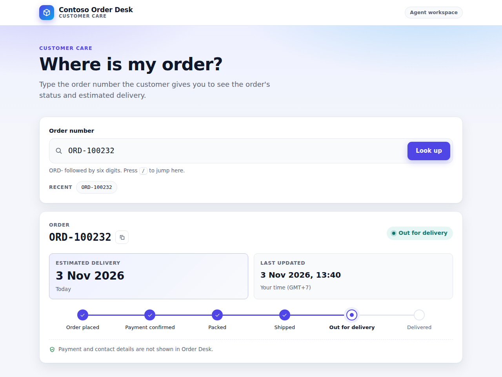
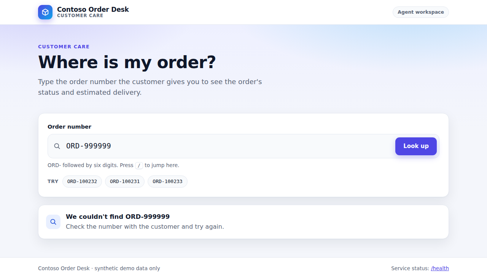
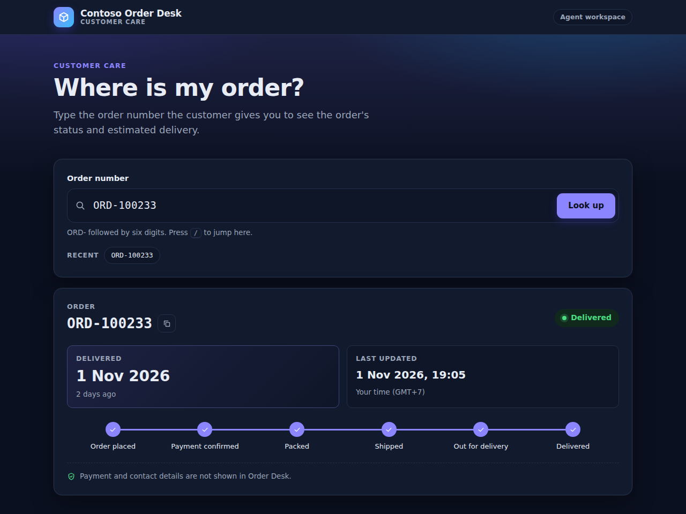
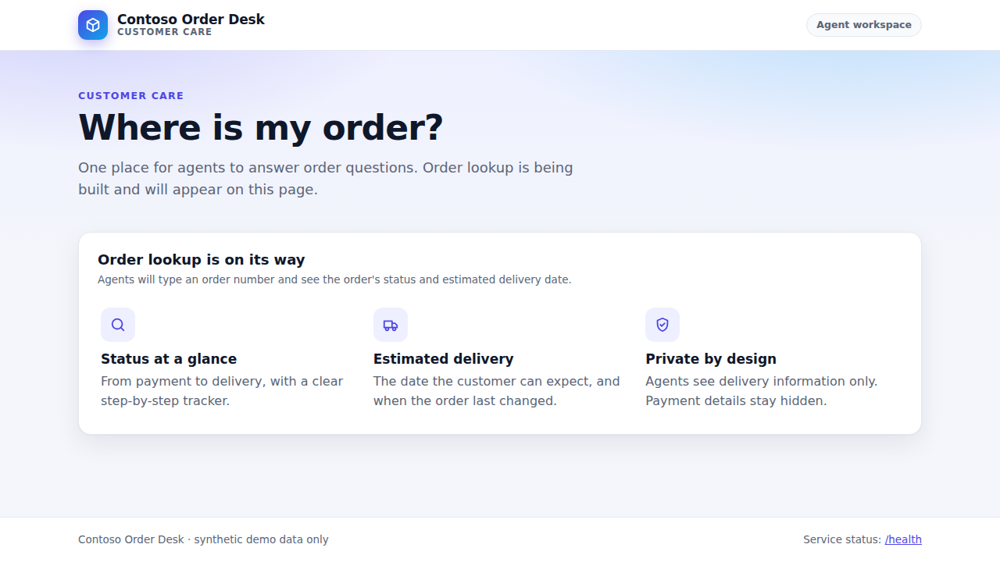

Live demo, step by step
Run From Business Requirement to Production live, following the replay chapter by chapter. Every step plays its clip from the replay, then gives you the exact clicks, prompts and commands, what you should see, what to say, an L400 look under the hood, a command to verify it, and what to do if it goes wrong.
▶ Watch the step
Each step plays its exact clip from the replay recording, with captions you can click, loop and slow down. The clip stops at the end of the step.
⌨ Do it live
Clicks, prompts and commands for ibranibeny/contoso-order-desk, filled in with your values, one copy button each. Tick each action as you go.
◎ Go deeper
L400 notes on how each feature works, a command that proves it worked, recovery for every likely failure, and the GitHub Docs or Microsoft Learn page behind it.
contoso organization. Copilot's output (issue text, plans, code, review comments) differs from run to run. Where your screen will differ from the replay, the step says so. Product behaviour was checked against GitHub Docs and Microsoft Learn on 1 November 2026.Chapters
The same ten chapters as the replay. The time is where the chapter starts in the replay; the live minutes are the target in the 60-minute session.
Your values
Values stay in this browser and fill every command, link and prompt on this page. Orange dashed values are examples. Detect from GitHub reads the public repository through the GitHub REST API without a token (60 requests an hour): open pull requests, the feature issue and its sub-issues, the production approver and the deployed web app. Issue and pull request numbers shown before you detect are what a first run in a repository with no issues yet produces; numbers are never reused, so detect again after every reset.
Cast and kit
Presenter
Owner of ibranibeny/contoso-order-desk. Drives GitHub, VS Code and the Azure portal from their own browser. Needs a Copilot plan that includes the cloud agent and code review.
One account
The Presenter also starts the workflows on Copilot's pull request and approves the production deployment. Pull requests need no approving review: the checks, CodeQL, Copilot code review and resolved conversations gate the merge. A team would add a second person as code owner and approver (APPROVER=… in step 0.3).
Tools
- VS Code with GitHub Copilot, git, Node.js 24
- GitHub CLI (
gh) signed in as the owner - Azure Cloud Shell (Bash) or Azure CLI, with rights to create a resource group, an identity and a role assignment
Keyboard shortcuts
Prints every step with its commands, without the videos.
0.1Prerequisites: tools, accounts and sign-ins
Everything the setup scripts and the live demo need. The scripts are not installed anywhere: they are files in the scripts/ folder of ibranibeny/contoso-order-desk, so you clone the repository in step 0.2 and run them from that folder.
The video did not load here. Open the interactive replay at this step instead.
Do it live
- Install the tools on the Presenter's laptop. The scripts are bash: use macOS, Linux, or Windows with WSL (Ubuntu).
Tool Used for git Clone the repository; the scripts push branches and one commit GitHub CLI ( gh)Every script talks to GitHub through it Node.js 24 with npm Tests and the app in VS Code ( .nvmrcsays 24);github-setup.shuses node,prepare-security-prs.shuses npmAzure CLI ( az)azure-setup.sh,cleanup-azure.sh, and the Azure checks inpreflight.sh. Azure Cloud Shell has it, already signed in (step 0.4)curl preflight.shcalls the app's/healthVS Code with GitHub Copilot Chat and GitHub Pull Requests Chapter 2 (the repository recommends both extensions) - Sign the GitHub CLI in as the repository owner. Choose GitHub.com, HTTPS, Authenticate Git with your GitHub credentials: Yes (so git pushes work), and log in with a web browser. Then add the
projectscope that the project board needs:Terminalgh auth login gh auth refresh -s project gh auth status - Sign in to Azure on the laptop.
azure-setup.shcreates the resources in the current subscription, so choose it.preflight.shneeds nothing else: from this sign-in it finds the web app, its resource group and its subscription by itself. Azure Cloud Shell is already signed in:Terminalaz login az account set --subscription "<subscription name or ID>" az account show --query "{subscription:name, user:user.name}" -o table - Check the rights before you start:
- Presenter: admin of
ibranibeny/contoso-order-desk(the owner is), and a Copilot plan that includes the Copilot cloud agent and Copilot code review. If the seat comes from an organization or enterprise, its owner must allow the cloud agent for that person. - One account is enough: this demo runs on the Presenter's account alone, and the Presenter also approves the production deployment. A second GitHub account as approver is optional (step 0.3).
- Azure: Owner, or Contributor plus User Access Administrator, on the subscription (the script creates a resource group and assigns a role on the web app). An App Service plan B1 costs money every hour until you run
cleanup-azure.sh.
- Presenter: admin of
You should see
gh auth status: logged in to github.com as the repository owner, Git operations over https, and token scopes that includerepoandproject.az account show: the subscription you want to use and your account.
Under the hood · L400
Where every command on this page comes from
Everything that starts with scripts/ is a file in the repository. Each script begins with a comment that says what it does and what it needs. They all load scripts/lib.sh, find the repository from the clone's origin (or from REPO=owner/name), and stop with a clear message if a tool, a sign-in or a permission is missing. Scripts that change something ask first; YES=1 skips the question.
| Script | What it does | Needs | Changes things |
|---|---|---|---|
scripts/github-setup.sh | Repository settings, approver access (two people only), label and project, CODEOWNERS and issue form commit, security features, production environment, Protect main ruleset, one Copilot Setup Steps run, tag demo-start | gh (admin, project scope), git, node | Yes |
scripts/azure-setup.sh | Resource group, App Service plan and web app, Application Insights, managed identity with federated credential and Website Contributor, environment secrets and variable, first CI/CD run | az (signed in), gh (admin) | Yes, with Azure cost |
scripts/prepare-security-prs.sh | Rebuilds the two security demo branches from main and opens their pull requests | gh, git, npm (registry access) | Yes |
scripts/preflight.sh | Read-only check: repository, rules, security features, environment, Actions runs, security pull requests and /health. With the Azure CLI signed in, also the Azure side, which it finds by itself: the web app and its settings, basic authentication, Application Insights, the identities that can deploy with their roles and federated credentials. Always: the last production deployment | gh, curl; az signed in (optional) | No |
scripts/reset-demo.sh | Closes pull requests and issues (except keep), deletes demo-time branches, moves main back to demo-start | gh (admin) | Yes |
scripts/cleanup-azure.sh | Deletes the resource group, the environment secrets and the AZURE_WEBAPP_NAME variable | az, gh | Yes, deletes |
scripts/create-demo-issues.sh | Fallback for step 1.1: creates the feature issue and three sub-issues without Copilot | gh (write) | Yes |
scripts/seed-orders.mjs | Regenerates the synthetic orders (used by DEMO_DATE in step 0.3) | node | Rewrites data/orders.json |
Laptop or Azure Cloud Shell
Microsoft Learn: Azure Cloud Shell signs you in to Azure automatically and already has the Azure CLI, Git, the GitHub CLI, Node.js and npm. It is a separate machine, though: sign the GitHub CLI in and clone the repository there as well. Without a storage account the session is ephemeral, so the clone is gone when you close it. Keep everything else on the laptop: VS Code needs the clone for chapter 2.
Whose credentials the scripts use
The scripts act as you: GitHub through the GitHub CLI's token (and git through the CLI as its credential helper), Azure through your az login session. Nothing from your sign-in is stored in the repository. During the demo the deploy job signs in to Azure on its own, with a short-lived OIDC token (step 8.1).
Verify
git --version && gh --version | head -1 && node --version && npm --version
az version --query '"azure-cli"' -o tsv && curl --version | head -1
gh auth status
az account show -o tableIf it goes wrong
| Symptom | Recovery |
|---|---|
git push asks for a user name or password | Run gh auth setup-git: the GitHub CLI then acts as git's credential helper. |
| "needs admin rights" or the wrong account | gh auth status shows who is signed in. Use gh auth switch or gh auth login again as the repository owner. |
| "Skipped the project: the GitHub CLI needs the project scope" | Run gh auth refresh -s project, then run the script again. |
| "Sign in to Azure first: az login" | Run az login, or run the Azure step in Azure Cloud Shell. |
Permission denied when you start a script | Run it with bash (bash scripts/preflight.sh). The files are stored as executable; a copy made outside git (for example a ZIP download) loses that. |
References
0.2Clone the demo repository: ibranibeny/contoso-order-desk
The live demo runs in ibranibeny/contoso-order-desk. The Order Desk app, its tests and workflows, the setup scripts, and every demo and fallback branch are already there.
The video did not load here. Open the interactive replay at this step instead.
Do it live
- Open github.com/ibranibeny/contoso-order-desk. Check the branch count (6), the tag
demo-start, and that Actions shows a green CI/CD run on main. - Clone it into a folder on your laptop and go into it. Every
scripts/…command on this page runs from this folder.Terminalgit clone https://github.com/ibranibeny/contoso-order-desk.git cd contoso-order-desk # same result with the GitHub CLI: gh repo clone ibranibeny/contoso-order-desk && cd contoso-order-desk - Look at what you cloned: the six branches, the starting point tag and the scripts.Terminal
git branch -r git tag ls scripts - Open the folder in VS Code (chapter 2 uses it) and install the dependencies once:Terminal
code . npm ci npm test - Check Copilot: the Presenter needs a Copilot plan that includes the cloud agent and code review. If the seat comes from an organization or enterprise, its owner must allow the cloud agent for that person. An optional second person (approver) needs only a GitHub account.
- Hands-on participants who want to run it themselves create their own copy, then put their owner and repository name in Your values:Terminal
gh repo create <your-account>/contoso-order-desk --template ibranibeny/contoso-order-desk --include-all-branches --public --clone
You should see
- Branches
main,solution,fallback/order-lookup-api,fallback/agent-lookup-page,demo/not-found-message,demo/add-date-helper, and the tagdemo-start. - Today
mainis one commit ahead ofdemo-start(a README update). Step 0.3 commits the code owners and the issue form, then movesdemo-startto the configured main.
contoso/contoso-order-desk in a fictional organization. You run it in ibranibeny/contoso-order-desk; every link and command on this page points there.Under the hood · L400
What is on main (the starting point)
src/app.jsandsrc/server.js: a health endpoint only (GET /health), Express 5 on Node.js 24, ES modules.data/orders.json: 40 synthetic orders generated byscripts/seed-orders.mjs. ORD-100231 to ORD-100234 are the scripted demo orders; ORD-999999 never exists.public/styles.css: the Contoso design system (od-classes) that Copilot is told to reuse;public/index.htmlis the placeholder page the cloud agent replaces..github/copilot-instructions.md,.github/instructions/tests.instructions.mdand the custom agent.github/agents/test-coverage-improver.agent.md: the rules every Copilot surface reads.- Three workflows:
ci-cd.yml,dependency-review.yml,copilot-setup-steps.yml.
This repository compared with an organization copy
| ibranibeny/contoso-order-desk (personal account, public) | Your own copy in an organization (private) | |
|---|---|---|
| Code scanning, Copilot Autofix, dependency review | Free on public repositories | GitHub Code Security on the repository |
Required reviewer on production | Works on public repositories | Needs GitHub Enterprise for private repositories |
Issue types (type: feature) | Not available; the issue still gets its label, project and sub-issues | Defined by the organization |
| CODEOWNERS | You (a user) | A team or users |
| Push protection with a custom pattern (Session 4) | Not available: custom patterns need an organization | GitHub Secret Protection |
| OIDC subject sent to Azure | Immutable format (created 1 November 2026) | Depends on the creation date |
Verify
gh api repos/ibranibeny/contoso-order-desk/branches --jq ".[].name"
gh api repos/ibranibeny/contoso-order-desk/git/ref/tags/demo-start --jq .object.shaIf it goes wrong
| Symptom | Recovery |
|---|---|
| Copilot is not offered as an assignee later | The cloud agent is not enabled for the Presenter's Copilot plan or seat. |
A participant's copy has only main | They missed Include all branches. Delete the copy and create it again with the command above. |
References
0.3Configure GitHub with one script
Apply every setting the replay relies on: settings, code owners, issue form, security features, the production environment, the Protect main ruleset and the demo-start tag.
The video did not load here. Open the interactive replay at this step instead.
Do it live
- Check that the GitHub CLI is signed in as the repository owner, with the project scope (step 0.1):Terminal
gh auth status - In the clone, on an up-to-date main, run the setup script. Without
APPROVER, or withAPPROVERset to your own user name, it sets the repository up for one account, as this demo runs: you are the code owner, pull requests need no approving review, and you approve the production deployment yourself:It shows what it will change and asks before it starts (Terminalcd contoso-order-desk # the clone from step 0.2 git switch main && git pull scripts/github-setup.shYES=1skips the question). It is safe to rerun. It commits the code owners to main, so approve the CI/CD deployment that follows in Actions. - With a second person instead, name them. They become code owner, required pull request reviewer and production approver, with Prevent self-review on; they accept the invitation (github.com/notifications), then you run the script again:Terminal
APPROVER=<approver> scripts/github-setup.sh - Only for your own copy in an organization, with issue types and a team. Not for a repository owned by a user, such as
ibranibeny/contoso-order-desk: a user has no teams or issue types, and the script stops if you pass them:TerminalISSUE_TYPE=feature CODEOWNERS_TEAM=@<your-org>/order-desk-maintainers scripts/github-setup.sh - Browser-only follow-ups the script prints: in the project add a Board view grouped by Status and turn on Workflows → Auto-add to project; in an organization, optionally create the custom secret pattern Session 4 uses.
- Optional: make the demo dates match your session day (ORD-100232 arrives "today"). With a second person, pass the same
APPROVERagain: a run without it sets the repository up for one account.TerminalDEMO_DATE=2026-11-20 scripts/github-setup.sh
You should see
- Nine numbered sections, each ending in ✓ lines, then Done. Any
!line tells you exactly what to finish in the browser.
Under the hood · L400
What the script calls (REST)
PATCH /repos/{owner}/{repo}viagh repo edit: squash merge only, delete head branches.PUT /repos/{owner}/{repo}/vulnerability-alertsand/automated-security-fixes;PATCH /repos/{owner}/{repo}withsecurity_and_analysisfor secret scanning and push protection;PATCH /repos/{owner}/{repo}/code-scanning/default-setupwithstate=configured.PUT /repos/{owner}/{repo}/environments/productionwithreviewers(you, or the approver),prevent_self_review(falsewith one account, so you can approve your own deployment;truewith an approver) andcustom_branch_policies: true, thenPOST …/deployment-branch-policiesformain.POST /repos/{owner}/{repo}/rulesetswithscripts/rulesets/protect-main.json. If GitHub rejects a rule your plan does not support, the script retries without it and tells you which rule to add in the UI.- It commits CODEOWNERS and the issue form keys with the ruleset paused for a moment, then tags
demo-startatorigin/main.
The ruleset, rule by rule
{
"name": "Protect main",
"target": "branch",
"enforcement": "active",
"conditions": {
"ref_name": { "include": ["~DEFAULT_BRANCH"], "exclude": [] }
},
"bypass_actors": [],
"rules": [
{ "type": "deletion" },
{ "type": "non_fast_forward" },
{
"type": "pull_request",
"parameters": {
"required_approving_review_count": 1,
"dismiss_stale_reviews_on_push": true,
"require_code_owner_review": true,
"require_last_push_approval": false,
"required_review_thread_resolution": true,
"allowed_merge_methods": ["squash"]
}
},
{
"type": "required_status_checks",
"parameters": {
"strict_required_status_checks_policy": false,
"do_not_enforce_on_create": false,
"required_status_checks": [
{ "context": "build" },
{ "context": "dependency-review" }
]
}
},
{
"type": "code_scanning",
"parameters": {
"code_scanning_tools": [
{ "tool": "CodeQL", "security_alerts_threshold": "high_or_higher", "alerts_threshold": "errors" }
]
}
},
{
"type": "copilot_code_review",
"parameters": { "review_on_push": true, "review_draft_pull_requests": false }
}
]
}required_approving_review_count: 0 and require_code_owner_review: false. GitHub does not count an approval of your own pull request, or of one you asked Copilot for, so nobody could give the approval. Every other rule stays.copilot_code_review rule type and the allowed_merge_methods parameter are used as the script sends them; they have not been tested against every plan. The script falls back without them, and the guide shows the UI path instead.Verify
gh api repos/ibranibeny/contoso-order-desk/rulesets --jq ".[] | [.id, .name, .enforcement] | @tsv"
gh api repos/ibranibeny/contoso-order-desk/rules/branches/main --jq ".[].type"gh api repos/ibranibeny/contoso-order-desk/environments/production --jq "{rules: [.protection_rules[].type], can_admins_bypass}"If it goes wrong
| Symptom | Recovery |
|---|---|
| "needs admin rights" | Run as a repository admin (organization owners are admins). |
| Required reviewer could not be set | Private repositories need GitHub Enterprise for environment reviewers; or, with a second person, the approver has not accepted the invitation yet. |
| Ruleset created "without: copilot_code_review" | Add Automatically request Copilot code review with Review new pushes in Settings → Rules → Rulesets → Protect main. |
References
0.4Create Azure with one script (OIDC, no secrets)
Create the App Service the demo deploys to, and let GitHub Actions sign in with a short-lived OpenID Connect token instead of a stored secret.
The video did not load here. Open the interactive replay at this step instead.
Do it live
- On your laptop (signed in with
az loginin step 0.1), in the clone:Terminalcd contoso-order-desk az account set --subscription "<subscription name or ID>" scripts/azure-setup.sh - Or in Azure Cloud Shell (Bash) at shell.azure.com. It is already signed in to Azure and has git, the GitHub CLI and Node.js, but it is a separate machine: sign the GitHub CLI in and clone the repository there first.Terminal
gh auth login gh repo clone ibranibeny/contoso-order-desk && cd contoso-order-desk az account set --subscription "<subscription name or ID>" scripts/azure-setup.sh - The script prints the subscription, resource group and web app it will use, then asks before it creates anything, because an App Service plan B1 costs money every hour until you delete it. Answer
y. Defaults: southeastasia, B1, Node 24 LTS. Optional settings:LOCATION=,RG=,APP=,SKU=,SUBJECT_FORMAT=legacy|immutable,DEPLOY=0. - Put the web app name and the resource group into Your values on the Start page. You do not need to note them now:
preflight.shprints both in step 0.6, and Detect from GitHub finds the web app after step 0.5.
You should see
- Six sections and Done, with the web app URL. In GitHub: three production environment secrets and the
AZURE_WEBAPP_NAMEvariable; a CI/CD run waiting for approval.
Under the hood · L400
Resources and hardening (Well-Architected service guide for App Service)
- Resource group
rg-contoso-order-desk; Linux planasp-contoso-order-desk(B1); web app onNODE:24-lts(falls back to 22 LTS if 24 is not offered in the region). - HTTPS only, minimum TLS 1.2, FTPS disabled, HTTP/2, Always On, health check path
/health. - Basic authentication for
scmandftppublishing credentials turned off (basicPublishingCredentialsPolicies … allow=false). Microsoft Learn: for new GitHub Actions workflows, use the user-assigned identity option. - Log Analytics workspace + Application Insights; app settings
APPLICATIONINSIGHTS_CONNECTION_STRINGandApplicationInsightsAgent_EXTENSION_VERSION=~3(Node.js autoinstrumentation on Linux is in public preview). - B1 is a demo size. The service guide recommends Basic tiers for lower environments and removing them when not needed; production would use Premium v3, zone redundancy and private networking.
The identity GitHub signs in as
- A user-assigned managed identity
id-github-order-desk(Microsoft Learn documents both an app registration and a user-assigned managed identity for azure/login with OIDC). - Role: Website Contributor scoped to the web app resource only, not the resource group or subscription.
- Federated credential
github-production: issuerhttps://token.actions.githubusercontent.com, audienceapi://AzureADTokenExchange, and a subject that matches only jobs that use theproductionenvironment.
# repositories created before 15 July 2026 (legacy format)
repo:ibranibeny/contoso-order-desk:environment:production
# repositories created after 15 July 2026, or renamed or transferred after it (immutable format)
repo:ibranibeny@<owner-id>/contoso-order-desk@<repo-id>:environment:productionThe script reads the repository's creation date and IDs with gh api repos/{owner}/{repo} and picks the format. If sign-in fails with AADSTS70021, the error message shows the subject GitHub sent; rerun with SUBJECT_FORMAT=legacy or immutable.
Why environment secrets, not repository secrets
Microsoft Learn notes that if an environment requires approval, a job cannot read that environment's secrets until a required reviewer approves it. The client, tenant and subscription IDs are not passwords, but keeping them on production means only an approved deploy job ever sees them.
Verify
az identity federated-credential list -g rg-contoso-order-desk --identity-name id-github-order-desk -o table
az role assignment list --assignee $(az identity show -g rg-contoso-order-desk -n id-github-order-desk --query principalId -o tsv) --all -o tableaz resource show -g rg-contoso-order-desk --namespace Microsoft.Web --resource-type basicPublishingCredentialsPolicies --parent sites/<web-app-name> -n scm --query properties.allowIf it goes wrong
| Symptom | Recovery |
|---|---|
| "Sign in to Azure first: az login" | Run az login on the laptop, or use Azure Cloud Shell. |
| "Run this inside a clone of your demo repository" | Run cd contoso-order-desk first. In Cloud Shell, clone the repository there too. |
| "Could not assign the role" | You need Owner or User Access Administrator on the resource group. |
| "The production environment does not exist yet" | Run step 0.3 first, so the environment has its approval rule before anything deploys. |
| Policy denies a setting | Some tenants restrict managed identities, role assignments or basic-auth changes. Ask your Azure admin, or run the same commands in a sandbox subscription. |
References
0.5Approve the first deployment
Prove the whole pipeline once before the audience sees it, and put the "before" picture (the placeholder page) live.
The video did not load here. Open the interactive replay at this step instead.
Do it live
- Open Actions → CI/CD → the run on main.
buildhas passed anddeployshows Waiting. You are the required reviewer (with a second person: the approver). - Select Review deployments, tick production, select Approve and deploy.
- When it finishes, open the URL on the deploy job. You see the placeholder page "Order lookup is on its way".
You should see
- Deploy steps: Download artifact → Az CLI login (OIDC, no stored password) → Deploy to Azure Web App → Smoke test (
/health). - The repository home page shows Deployments · production.
Under the hood · L400
What the smoke test proves
The last step calls GET /health with curl --retry 12 --retry-delay 10 --retry-all-errors. A green run means the token exchange, the role assignment, the package upload and the app start all worked, with nothing stored but three IDs.
Verify
curl -s https://<web-app-name>.azurewebsites.net/healthIf it goes wrong
| Symptom | Recovery |
|---|---|
| Login fails with AADSTS70021 | Subject mismatch: read the subject in the error and rerun azure-setup.sh with SUBJECT_FORMAT=legacy or immutable. |
| Deploy is skipped | The AZURE_WEBAPP_NAME variable is missing: run azure-setup.sh. |
References
0.6Before each session: security pull requests and pre-flight
Have the two security pull requests already analysed, and confirm every gate, secret and the app are ready.
The video did not load here. Open the interactive replay at this step instead.
Do it live
- At least 60 minutes before, in the clone: open the two security pull requests from the current main (it needs npm with access to the npm registry, because it installs lodash 4.17.15 on the dependency branch).Terminal
cd contoso-order-desk scripts/prepare-security-prs.sh - Write the two pull request numbers into Your values (XSS and dependency).
- 30 minutes before, and again in the break, run the pre-flight check. There is nothing to pass: it reads GitHub through the GitHub CLI and, with the Azure CLI signed in (step 0.1), finds the subscription, resource group, web app and identity by itself. It only reads; every line is ✓ ready, ! check by hand, or ✗ fix first:Terminal
cd contoso-order-desk scripts/preflight.sh - Copy the web app and resource group from its line Values for the guide into Your values.
- A browser signed in as the Presenter (with a second person: the Approver signs in with their own account in another browser or on a second laptop). Tabs: repository, project board, Actions, Settings → Rules, Security, the Azure portal, the web app. VS Code: font 18+,
npm cidone, terminal open, Agent and Plan visible. - Set expectations: say out loud that AI output varies, and keep the rehearsal recording or this replay ready offline.
You should see
- Every pre-flight line ✓, including
CodeQLfailing on the XSS pull request anddependency-reviewfailing on the dependency pull request: those failures are what you show in chapter 4 (Security gates). - In the Azure section: the web app with its resource group, region and plan; Running, HTTPS only, TLS 1.2+, FTP off, Node 24 (or 22), health check; basic authentication off; Application Insights with its connection string and auto-instrumentation; the identity with Website Contributor and no other role in that subscription; the federated credential with the subject your repository sends; and the last production deployment, which shows that sign-in worked at that time.
Under the hood · L400
Why open them early
CodeQL default setup analyses the pull request's merge commit and can take several minutes; the dependency review check needs the dependency graph for both commits. Opening the pull requests during the session would leave you narrating a spinner.
What the Azure part reads, and how it finds it
- Subscription: the current one first, because
azure-setup.shcreated the web app there. Only if the web app is not there does it search the other enabled subscriptions you can see (az account list), up to 30 of them, 6 at a time: one sign-in can hold many tenants and subscriptions, and searching them all takes minutes. So a web app with the same name in another subscription is not looked for while the current one has it. A subscription it cannot search (permissions, network), or a failedaz account list, is reported, and then it does not claim "not found". If the web app is in another subscription it says so and tells you to runaz account setfirst, becauseazure-setup.shfixes act on the current subscription. - Web app: the name in the GitHub variable
AZURE_WEBAPP_NAME(az resource list --resource-type Microsoft.Web/sites --name …); without the variable, every resource group thatazure-setup.shtagsworkload=contoso-order-desk. If more than one web app matches, it stops and asks you to set the variable rather than check a guess. - Settings:
az webapp show,az webapp config show,az appservice plan showfor the web app's own plan,az resource showfor thebasicPublishingCredentialsPoliciesscmandftp, andaz webapp config appsettings list. The runtime must be Node.js 24, or 22 where 24 is not offered (whatazure-setup.shcreates). A stopped app gets theaz webapp startcommand and a wrong runtime theaz webapp config set --linux-fx-versioncommand, because a rerun ofazure-setup.shchanges neither; the other settings come back withazure-setup.sh. For Application Insights it checks that the connection string is not empty and that auto-instrumentation (ApplicationInsightsAgent_EXTENSION_VERSION) is exactly~3; values are tested inside the query and never printed, and telemetry itself is not checked. - Identities: every managed identity with Website Contributor on the web app (
az role assignment list --scope), looked up in the web app's subscription first and then in the other subscriptions it may search (up to 30), because an identity can live elsewhere. More than one is flagged: GitHub never shows theAZURE_CLIENT_IDvalue, so the script cannot tell which one the secret names; it prints each client ID for you to compare. For each identity: its role assignments in the web app's subscription, including those through Entra groups (--all --include-groups; it says so if the directory does not allow the group lookup; other subscriptions are not checked), and all its federated credentials. Any trust beyond this repository'sproductionenvironment is flagged, because whoever matches it can deploy too. With one identity a problem is ✗; with several, a problem on one is ! and the check fails only if none can sign in. Service principals with the role that are not managed identities are listed for a manual check. Owner, Contributor or Website Contributor on the resource group or above also allow deployments: those principals are counted (--include-inherited) on an information line, not inspected, and role grants to groups are not expanded. It is not a warning: in shared subscriptions they are often platform identities the demo cannot change. - Subject: built from the repository's IDs, as
azure-setup.shdoes. A repository created after 15 July 2026 always sends the immutable subject, so for this repository the check is strict: a credential with the legacy subject is ✗, because the deploy would fail withAADSTS70021. An older repository sends the legacy subject unless it was renamed or transferred after that date or its owner opted in to immutable subjects, which the script cannot see: a credential for one format is then ! until a deployment confirms it, and trusting both is ✓. - Last deployment: the latest deployment to the
productionenvironment (GitHub API). Succeeded shows that the secrets, the federated credential and the role worked together at that time; changes made since are covered by the checks above, not by this line. None yet means the first deployment (step 0.5) is the real test.
Every Azure call is a show or list. A call that fails (permissions, network) is reported as not checked, never as missing, so an error never sends you to create resources. Rows are read with queries such as [[a, b]] or [].[a, b]: with -o tsv the Azure CLI prints a flat list one value per line and a list of lists one row per line. The /health URL comes from the default host name Azure reports for the web app, not from a guessed <app>.azurewebsites.net; WEBAPP_URL=https://… scripts/preflight.sh checks a custom domain instead.
Verify
gh pr checks 1
gh pr checks 2If it goes wrong
| Symptom | Recovery |
|---|---|
| CodeQL check passes on the XSS pull request | Analysis not finished, or the ruleset thresholds differ: set security alerts to High or higher. CodeQL rates js/reflected-xss security severity 7.8 (High). |
| "Not signed in to Azure: Azure resources not checked" | Run az login, or run the check in Azure Cloud Shell. The GitHub checks and /health run either way. |
| "Web app … not found in any subscription you can see" | Sign in with the account that ran azure-setup.sh. |
| "Could not search subscription(s) …" | Sign in with the account that ran azure-setup.sh (az login) and run the check again. Do not run azure-setup.sh until the web app is found: it would create a second one. |
| "Web app state Stopped" or "Runtime …: the app needs Node.js 24 or 22" | Run the az webapp start or az webapp config set command the line prints. |
| "2 web apps match …" | Set the AZURE_WEBAPP_NAME variable to the demo web app (Settings → Secrets and variables → Actions → Variables), or run scripts/azure-setup.sh again, which sets it. |
| "Federated credential … trusts the legacy subject …, but a repository created after 15 July 2026 always sends …" | Run SUBJECT_FORMAT=immutable scripts/azure-setup.sh: it updates the credential in place. |
| "2 managed identities can deploy to …" | Check that the AZURE_CLIENT_ID secret of the production environment is the client ID printed for id-github-order-desk, and remove Website Contributor from identities that should not deploy. |
| "Identity … also trusts: …" | Delete the federated credentials you do not need (az identity federated-credential delete): anyone matching them can deploy to the web app. |
| "No production deployment yet" | Run and approve the first deployment (step 0.5). Until then nothing proves that the secrets and the federated credential work together. |
References
1.1Copilot drafts the issue
Turn the business requirement into a feature issue with testable acceptance criteria and three sub-issues, and show that people own the result.
The video did not load here. Open the interactive replay at this step instead.
Do it live
- Set the scene (minutes 0–3): read the requirement aloud and show the placeholder page live.
- Open github.com/copilot and paste the prompt with the requirement:Prompt 1 · Copilot on GitHub.com
In ibranibeny/contoso-order-desk, create a feature issue from the requirement below using our Feature request form. Write testable acceptance criteria, and create sub-issues for: (1) the order lookup API, (2) the agent lookup page, (3) an audit log of every lookup. Our agents answer a lot of "where is my order?" calls, and today they search several systems to find one order. We need a simple Order Desk: an agent types an order number and immediately sees the order status and estimated delivery date. Unknown or mistyped numbers must show a clear message. Agents must not see payment details, and every lookup must be recorded for audit. - Read the drafted acceptance criteria aloud. Change one by hand, as the replay does ("An unknown or mistyped order number…").
- Select Create. Write the four issue numbers into Your values.
You should see
- A draft feature issue that follows the Feature request form (Business problem, Desired outcome, Acceptance criteria, Data sensitivity, Non-functional requirements), plus three draft sub-issues.
Under the hood · L400
Why the draft follows your form
.github/ISSUE_TEMPLATE/feature-request.yml is an issue form: each body item becomes a section, and validations.required makes it mandatory. scripts/github-setup.sh fills two top-level keys: type: feature (organizations with issue types) and projects: ["OWNER/N"], which adds the issue to the project if the person opening it has write access to that project.
name: Feature request
title: "[Feature]: "
labels: ["enhancement"]
type: feature
projects: ["ibranibeny/1"]
body:
- type: textarea
id: acceptance
attributes:
label: Acceptance criteria
validations:
required: trueStatus of this feature
Creating issues with Copilot on GitHub.com is in public preview. Issue forms themselves are documented as public preview on the configuration page. Re-check both one week before.
Verify
gh issue view 3 --json title,labels,projectItems --jq "{title, labels: [.labels[].name], projects: [.projectItems[].title]}"
gh api repos/ibranibeny/contoso-order-desk/issues/3/sub_issues --jq ".[] | [.number, .title] | @tsv"If it goes wrong
| Symptom | Recovery |
|---|---|
| No draft, or an unexpected format | Use New issue → Feature request and paste the prepared text from docs/PROMPTS.md, or run scripts/create-demo-issues.sh before you go on stage. The rest of the demo is unchanged. |
References
1.2The issue arrives with type, label, project and sub-issues
Show that the issue is structured data, not just text.
The video did not load here. Open the interactive replay at this step instead.
Do it live
- Open the parent issue. Point at the sidebar: Type Feature, label
enhancement, Projects Order Desk, and the Sub-issues panel (0 of 3).
You should see
- The replay calls it #12 with sub-issues #13 (API), #14 (page) and #15 (audit). Your numbers come from your repository.
Under the hood · L400
Sub-issues are real links
Sub-issues are a parent–child relationship you can query (GET /repos/{owner}/{repo}/issues/{n}/sub_issues), and the parent shows progress as children close. When the API and page pull requests merge with Fixes #n, the parent shows 2 of 3.
If it goes wrong
| Symptom | Recovery |
|---|---|
| No Type field | Issue types exist only in organizations (Option B has none). Skip it. |
References
1.3Move the feature to In progress on the project board
Connect the work to the business view that stakeholders read.
The video did not load here. Open the interactive replay at this step instead.
Do it live
- Open the Order Desk project (Board view). Drag the feature card from Todo to In progress.
You should see
- The parent and the three sub-issues are on the board (form
projects:key or the Auto-add workflow).
Under the hood · L400
How items got there
Either the issue form's projects key or the project's built-in Auto-add to project workflow. The built-in Item closed workflow later moves closed issues to Done, which is what you show in step 10.1.
Verify
gh project item-list 1 --owner ibranibeny --format json --jq ".items[] | [.content.number, .status] | @tsv"If it goes wrong
| Symptom | Recovery |
|---|---|
| Issues are not on the board | Add them with Add item, or turn on the Auto-add workflow for the repository. |
References
1.4Delegate the page to the Copilot cloud agent
Start the long-running work now, so the cloud agent's pull request is ready by chapter 3 (Pull requests).
The video did not load here. Open the interactive replay at this step instead.
Do it live
- Open the Agent lookup page sub-issue (5). Select Assignees → Copilot.
- Paste the optional prompt and select Assign:Prompt 2 · assigning to Copilot
Build the agent lookup page in public/ with plain HTML, CSS and JavaScript. Another pull request is building the API; code against this contract: GET /api/orders/:orderId returns 200 with { id, status, lastUpdated, estimatedDelivery }, 400 for invalid IDs and 404 with { error } when not found. Do not add or change server routes. Use the Contoso design system in public/styles.css and keep the existing top bar and footer. Show a clear message for unknown order numbers, make the form keyboard accessible, and add unit tests for the formatting helpers. - Move on immediately. Do not wait for the agent.
You should see
- An 👀 reaction, then timeline events: Copilot assigned, started work with View session, and a draft pull request on a
copilot/…branch.
Under the hood · L400
Where the agent runs
- In an ephemeral GitHub Actions environment.
.github/workflows/copilot-setup-steps.ymlprepares it: the job must be calledcopilot-setup-steps; here it checks out the code, sets up Node 24 and runsnpm ci. - It reads
.github/copilot-instructions.md, so it reuses theod-design system and puts DOM-free helpers inpublic/*.jswith tests. - Its firewall allows the recommended list by default; it can only push to its own
copilot/branch, and it validates its own changes (CodeQL, secret scanning, dependency checks) before it asks for review. - A session has a hard limit of 59 minutes.
Why the prompt states the API contract
The API is built in parallel in VS Code (chapter 2). Stating the contract (status codes, JSON shape, "do not add server routes") keeps the two pull requests independent, so they can be reviewed and merged in either order. The fallback branch fallback/agent-lookup-page is what a good result looks like: public/app.js, public/format.js and test/page.test.js.
Verify
gh pr list --author "app/copilot-swe-agent" --state open
gh pr list --search "head:copilot/" --state openIf it goes wrong
| Symptom | Recovery |
|---|---|
| Copilot is not in the Assignees list | Cloud agent policy, repository access or seat (see step 0.1). |
| The session is still running in chapter 3 | Show the live session log, then use the rehearsal pull request labelled keep, or open one from fallback/agent-lookup-page (step 3.2). |
References
2.1Branch and repository rules in VS Code
Show the rules Copilot follows before asking it for anything.
The video did not load here. Open the interactive replay at this step instead.
Do it live
- Create the branch (status bar or terminal):Terminal
git switch -c feature/order-lookup-api - Open
.github/copilot-instructions.mdfor ten seconds. Point at Tech stack, Coding standards (validate every parameter, JSON errors) and Data protection (allow-list fields, never payment or contact data).
You should see
- The instructions file. In Chat, the response references show the instructions file was used.
Under the hood · L400
How instructions are layered
- Repository-wide:
.github/copilot-instructions.mdapplies to every chat request in this repository and to the cloud agent and code review. - Path-specific:
.github/instructions/tests.instructions.mdhasapplyTo: "test/**/*.test.js", so test conventions (node:test,app.listen(0), cover 200/400/404) apply only when Copilot works on test files. - Custom agent:
.github/agents/test-coverage-improver.agent.mddefines atest-coverage-improverlimited to the read, search and edit tools.
References
2.2Plan mode, then Agent mode
Show the senior-engineer loop: plan first, then let the agent edit and test, approving every command.
The video did not load here. Open the interactive replay at this step instead.
Do it live
- In Chat, choose Plan and send:Prompt 3 · Plan mode
Plan the order lookup API from issue #4: GET /api/orders/:orderId returns id, status, lastUpdated and estimatedDelivery from data/orders.json; 400 when the ID doesn't match ORD- plus six digits; 404 with a JSON error for unknown IDs. List the files you will change and the tests you will add. - Read the plan aloud: the files (for example
src/validation.js,src/orders.js,src/app.js,test/orders.test.js) and the test cases. Nothing has changed yet. - Switch to Agent and send:Prompt 4 · Agent mode
Implement the plan. Then run npm test and fix any failures. - When it asks to run
npm testin the terminal, select Allow.
You should see
- Edits across several files, a terminal approval, then a passing test run (or the agent fixes failures and reruns).
Under the hood · L400
What a good result looks like (fallback/order-lookup-api)
// src/validation.js
const ORDER_ID = /^ORD-\d{6}$/;
export function isValidOrderId(value) {
return typeof value === 'string' && ORDER_ID.test(value);
}
// src/orders.js: an explicit allow-list keeps payment and contact data on the server
export const SUMMARY_FIELDS = ['id', 'status', 'lastUpdated', 'estimatedDelivery'];
// src/app.js
app.get('/api/orders/:orderId', (req, res) => {
const { orderId } = req.params;
res.set('Cache-Control', 'no-store');
if (!isValidOrderId(orderId)) {
return res.status(400).json({ error: 'Order numbers look like ORD-123456' });
}
const order = findOrder(orders, orderId);
if (!order) {
return res.status(404).json({ error: 'Order not found' });
}
res.json(toOrderSummary(order));
});Plan vs Agent
- Plan researches the workspace and answers with a plan; it does not edit files. Use it to agree the design before any change.
- Agent picks files, edits them, and runs tools such as the terminal. Terminal commands need your approval unless you have allowed them; the approval is the human control point you show.
- The repository instructions and the path-specific test instructions shape both: tests use
node:testwithapp.listen(0)and cover 200, 400 and 404.
Review checklist for the diff
- The regular expression is anchored:
^ORD-\d{6}$. - The response is an allow-list (no
customer,paymentorshippingkeys). - 400 and 404 return
{ "error": "…" }JSON. - A test asserts the response keys exactly.
Verify
npm test
curl -s localhost:3000/api/orders/ORD-100232 # after: npm startIf it goes wrong
| Symptom | Recovery |
|---|---|
| The agent stalls, or tests still fail after two rounds | Stop and say "this is the rehearsal run of the same prompt". Then use the fallback: Terminal |
| More than 3 minutes behind at minute 24 | Use the fallback for the rest of chapter 2. |
References
2.3Commit with a Copilot message and push
Close the inner loop with a clear commit, then hand over to GitHub.
The video did not load here. Open the interactive replay at this step instead.
Do it live
- In Source Control, select the sparkle (Generate commit message) to generate the commit message. Edit it if needed.
- Commit, then Sync Changes (push).
- Accept the prompt to Create Pull Request (GitHub Pull Requests extension), or run:Terminal
gh pr create --base main --fill
You should see
- A message such as "Add order lookup API with validation and tests (#4)", and the branch on GitHub.
Under the hood · L400
Why squash later
The repository allows only squash merges (set by the setup script). The commit history on the branch can be as granular as you like; main gets one commit per pull request, which keeps reset-demo.sh and the deployment history readable.
Verify
git log --oneline -3
gh api repos/ibranibeny/contoso-order-desk/branches/feature/order-lookup-api --jq .commit.shaIf it goes wrong
| Symptom | Recovery |
|---|---|
| Push rejected | You are on main: the ruleset blocks direct pushes. Switch to the feature branch. |
2.4Open the pull request with a Copilot summary
Open the pull request that the rest of the pipeline will judge.
The video did not load here. Open the interactive replay at this step instead.
Do it live
- In the pull request description, use Copilot → Summary to draft the description.
- Make sure the description contains the closing keyword:Pull request description
Fixes #4 - Select Create pull request. Write the number into Your values (API pull request).
You should see
- The pull request with checks starting (
build, Dependency Review, CodeQL) and Copilot already requested as a reviewer.
Under the hood · L400
What starts on "opened"
ci-cd.ymlruns onpull_requestto main: jobbuildonly (the deploy job'sifexcludes pull requests).dependency-review.ymlruns on every pull request: jobdependency-review.- CodeQL default setup analyses the pull request.
- The ruleset requests a Copilot code review automatically (rule Automatically request Copilot code review).
Verify
gh pr view 8 --json reviewRequests,statusCheckRollup --jq "{reviewers: [.reviewRequests[].login], checks: [.statusCheckRollup[] | {name, status, conclusion}]}"References
3.1Copilot code review and a committed suggestion
Show a fast first review from Copilot, and that it is advice, not approval.
The video did not load here. Open the interactive replay at this step instead.
Do it live
- On the API pull request, show Reviewers: Copilot was requested by the ruleset (otherwise request it there).
- Open Copilot's review. Read one comment aloud. Use Commit suggestion on a suggested change, or reply to ask for a change.
- Resolve the conversation: the ruleset requires resolved conversations.
You should see
- A review of type Comment from Copilot, usually within a minute. In the replay it suggests trimming the order number; the
solutionbranch has exactly that change.
Under the hood · L400
What the replay's suggestion changes
- const { orderId } = req.params;
+ const orderId = req.params.orderId.trim();The solution branch also adds a test for it: GET /api/orders/%20ORD-100232%20 returns 200.
Review on push
With Review new pushes on, Copilot reviews again after each push. With a second person, dismiss stale approvals means their approval must come after the last push (step 3.3).
Verify
gh pr view 8 --json reviews --jq ".reviews[] | [.author.login, .state] | @tsv"If it goes wrong
| Symptom | Recovery |
|---|---|
| No Copilot review | Request it from Reviewers → Copilot. If the ruleset has no Copilot rule, add it (step 0.3). |
References
3.2The cloud agent's pull request: session, workflows, @copilot
Show what the agent did, that its workflows need a human to run, and how to iterate with it.
The video did not load here. Open the interactive replay at this step instead.
Do it live
- Open the draft pull request linked from the page sub-issue. Select View session: what it read, what it ran, its tests and its self-checks.
- Select Approve and run workflows so the checks start. Any user with write access can, including you: GitHub only stops your approval of the pull request itself from counting.
- Presenter: comment on the pull request:Prompt 5 · pull request comment
@copilot Show the estimated delivery date in a friendly format such as "5 Nov 2026", and add a test for it. - Write the pull request number into Your values (page pull request). Mark it Ready for review when Copilot is done.
You should see
- Copilot reacts, works, and pushes a new commit to the same branch. The commits are signed and list the presenter as co-author.
Under the hood · L400
Why workflows wait
Workflows on pull requests opened by the Copilot cloud agent do not run until someone with write access approves them. That is the platform stopping code an agent wrote from running in your CI with your secrets before a person has looked.
What "friendly format" means in the real code
// public/format.js
export function formatDate(isoDate) {
const date = parseDay(isoDate);
if (!date) return '';
return new Intl.DateTimeFormat('en-GB', { day: 'numeric', month: 'short', year: 'numeric', timeZone: 'UTC' }).format(date);
}
// test/page.test.js
assert.equal(formatDate('2026-11-05'), '5 Nov 2026');Delivery dates are calendar dates, so they are formatted in UTC to avoid shifting a day; "last updated" is a timestamp, shown in the agent's own time zone.
Verify
gh pr view 7 --json commits,statusCheckRollup --jq "{commits: [.commits[].messageHeadline], checks: [.statusCheckRollup[] | {name, conclusion}]}"If it goes wrong
| Symptom | Recovery |
|---|---|
| The agent's pull request is not ready | Show the live session log, then use the rehearsal pull request labelled keep, or open one from the fallback branch:Terminal |
| Checks never start | Nobody has selected Approve and run workflows yet. |
References
3.3Review both pull requests before merging
A person reads the diffs before anything merges. With one account no approval is required: the checks, CodeQL, Copilot code review and resolved conversations are the gates.
The video did not load here. Open the interactive replay at this step instead.
Do it live
- On the API pull request, open Files changed and read the diff. Resolve every conversation, Copilot's included.
- Do the same on the page pull request, after Copilot's last push.
- Point out: in a team the ruleset would also require a code owner's approval, and GitHub would not count the presenter's approval of a pull request they asked Copilot for.
You should see
- The merge box lists the required checks and resolved conversations, and no required review.
APPROVER=… in step 0.3). With one account there is nothing to approve here.Under the hood · L400
The rules behind the merge box
required_approving_review_count: 0andrequire_code_owner_review: falsewith one account. With a second person they are1andtrue: the approval must come from a code owner listed in.github/CODEOWNERS, and your approval of a pull request you asked Copilot for does not count.dismiss_stale_reviews_on_push: true: with a second person, a new push (for example Copilot's @copilot commit) dismisses earlier approvals.required_review_thread_resolution: true: every conversation, including Copilot's, must be resolved.
Verify
gh pr view 8 --json reviewDecision,mergeStateStatusIf it goes wrong
| Symptom | Recovery |
|---|---|
| "Review required" | The ruleset still asks for an approval: run scripts/github-setup.sh without APPROVER for one account, or have the approver approve after the last push. |
References
4.1CodeQL flags reflected XSS; Copilot Autofix fixes it
Show security feedback arriving in the pull request, with a proposed fix, before anything merges.
The video did not load here. Open the interactive replay at this step instead.
Do it live
- Open the pull request #1 (prepared in step 0.6): "Show a not-found message for order lookups". The replay calls it #18.
- Open Files changed. Show the annotation on the changed line and the failing check Code scanning results / CodeQL.
- Show the Copilot Autofix suggestion. Read the diff aloud, then select Commit fix.
- Wait for the rerun (a few minutes): the alert closes and the check turns green.
You should see
- A High alert "Reflected cross-site scripting" on
res.send(`<p>No order found for ${id}</p>`), and an Autofix that encodes the value (the CodeQL query help usesescape-html, as the replay shows).
Under the hood · L400
The deliberately unsafe handler (demo/not-found-message)
// DELIBERATELY UNSAFE (demo branch demo/not-found-message). Never merge it.
app.get('/orders/lookup', (req, res) => {
const id = req.query.id;
const order = orders.find((o) => o.id === id);
if (!order) {
return res.send(`<p>No order found for ${id}</p>`);
}
res.json(order);
});Two problems, only one of which CodeQL is built to find: the reflected XSS (user input written into HTML), and the full order object (payment and contact data) returned to the caller, which breaks the data-protection rule in the instructions. Mention the second: tools catch patterns; reviewers catch intent.
The query behind the alert
- CodeQL query
js/reflected-xss: kind path-problem, severity error, security severity 7.8 (High), precision high; part of the defaultjavascript-code-scanningsuite used by default setup. - It tracks data flow from a source (
req.query.id) to an HTTP response sink (res.send). The alert shows the path. - Merge protection comes from the ruleset rule
code_scanning: CodeQL withsecurity_alerts_threshold: high_or_higherandalerts_threshold: errors. A high-severity security alert therefore blocks the merge.
About Autofix
Copilot Autofix proposes fixes for a subset of CodeQL queries on a best-effort basis. Treat the suggestion like any other code change: read it, run the tests, then commit. Confirm in rehearsal that this alert gets a suggestion at your settings.
Verify
gh api "repos/ibranibeny/contoso-order-desk/code-scanning/alerts?ref=refs/pull/1/merge" --jq ".[] | [.number, .rule.id, .rule.security_severity_level, .state] | @tsv"If it goes wrong
| Symptom | Recovery |
|---|---|
| CodeQL still running | Show the alert on the Security tab or rehearsal screenshots, continue with 4.2, come back. |
| No Autofix suggestion | Explain the fix yourself (encode the output, return only the summary fields) and commit it; Autofix is best-effort. |
| The check passes | Thresholds differ: in the ruleset set security alerts to High or higher. |
References
4.2Dependency review blocks a vulnerable package
Show supply-chain risk stopped at the pull request, then close it.
The video did not load here. Open the interactive replay at this step instead.
Do it live
- Open the pull request #2 "Add a date helper for delivery windows" (the replay calls it #19).
- Show the failing Dependency Review check and the action's summary comment; open Files changed to show the
package.jsonand lock-file diff. - Scroll to the merge box: merging is blocked by the required check. Select Close pull request.
You should see
- lodash 4.17.15 with advisories, including Prototype Pollution (CVE-2020-8203, high, fixed in 4.17.19) and Command Injection (CVE-2021-23337, high, fixed in 4.17.21). The exact list comes from the GitHub Advisory Database at the time of the check, and grows over time.
Under the hood · L400
The workflow
name: Dependency Review
on: [pull_request]
permissions:
contents: read
jobs:
dependency-review:
runs-on: ubuntu-latest
permissions:
contents: read
pull-requests: write # lets the action post its summary as a pull request comment
steps:
- name: Checkout repository
uses: actions/checkout@v7
- name: Dependency Review
uses: actions/dependency-review-action@v5.0.0
with:
comment-summary-in-pr: on-failure- The action compares the dependency graph of the base and head commits and checks added versions against the GitHub Advisory Database.
- Without
fail-on-severityit fails on any severity;comment-summary-in-pr: on-failureneedspull-requests: write, which is granted to this job only. - The job name
dependency-reviewis the required status check context in the ruleset.
What the pull request adds
// src/date-helper.js on demo/add-date-helper
import _ from 'lodash';
export function deliveryWindow(isoDate, extraDays = 2) { … _.range(extraDays + 1) … }The branch was created with npm install lodash@4.17.15 --save-exact, so both package.json and package-lock.json change.
Verify
gh api repos/ibranibeny/contoso-order-desk/dependency-graph/compare/main...demo/add-date-helper --jq ".[] | select(.change_type==\"added\") | [.name, .version, (.vulnerabilities | length)] | @tsv"If it goes wrong
| Symptom | Recovery |
|---|---|
| The check passes | Dependency graph is off, or the advisories changed. Turn on the dependency graph; check lodash 4.17.15 in the GitHub Advisory Database. |
References
5.1Show the ruleset that enforced every gate
Name the single policy object behind everything the audience has seen.
The video did not load here. Open the interactive replay at this step instead.
Do it live
- Open Settings → Rules → Rulesets → Protect main for twenty seconds. Read the rules: pull request (no approval with one account, a code owner's approval with two people), required checks
buildanddependency-review, code scanning results (CodeQL), automatic Copilot code review, no force push, no deletion.
You should see
- Target: default branch; enforcement: Active; no bypass actors.
Under the hood · L400
Rulesets vs. branch protection
- Rulesets layer: several can target the same branch, and the most restrictive combination applies. Anyone with read access can see the rules that apply to a branch.
GET /repos/{owner}/{repo}/rules/branches/mainreturns the effective rules for main, from every ruleset that targets it.- Enforcement can be
active,evaluate(organization rulesets, to test impact) ordisabled;reset-demo.shsetsdisabledfor a moment to move main back, thenactiveagain.
Verify
gh api repos/ibranibeny/contoso-order-desk/rules/branches/main --jq ".[] | {type, parameters}"References
5.2Squash and merge both pull requests
Merge the reviewed, checked work.
The video did not load here. Open the interactive replay at this step instead.
Do it live
- On the API pull request: all checks green and conversations resolved (with two people, also changes approved). Select Squash and merge, then confirm.
- Do the same on the page pull request.
You should see
- "Pull request successfully merged and closed"; the API and page sub-issues close through
Fixes #…; the branches are deleted.
Under the hood · L400
Merge order and the deploy
Each merge to main starts a CI/CD run. The deploy job has concurrency: {group: production-deploy, cancel-in-progress: true}, so if the second merge's run reaches its deploy job before the first deployment is approved, the first run's deploy is cancelled on purpose and the newer run deploys both changes with one approval.
Verify
gh pr view 8 --json state,mergedAt,closingIssuesReferences --jq "{state, mergedAt, closes: [.closingIssuesReferences[].number]}"
gh issue view 4 --json stateIf it goes wrong
| Symptom | Recovery |
|---|---|
| Merge blocked | Read the merge box: an unresolved conversation, a pending required check, or (two people) a missing approval after a new push. |
References
6.1CI/CD: build and test, then deploy waits
Show the pipeline the merge started, and where it stops for a person.
The video did not load here. Open the interactive replay at this step instead.
Do it live
- Open Actions → CI/CD → the run for the merge commit. Expand
build: checkout, Node.js 24,npm ci,npm test, prune, upload artifact. Point atdeploy: Waiting for production.
You should see
buildgreen with all tests passing (the count depends on the tests Copilot wrote; thesolutionbranch has 18);deploywaiting for review.
Under the hood · L400
The workflow, line by line
name: CI/CD
on:
pull_request:
branches: [main]
push:
branches: [main]
workflow_dispatch:
permissions:
contents: read # least privilege by default; raise per job
env:
NODE_VERSION: '24.x'
jobs:
build:
runs-on: ubuntu-latest
steps:
- uses: actions/checkout@v7
- name: Use Node.js
uses: actions/setup-node@v7
with:
node-version: ${{ env.NODE_VERSION }}
cache: 'npm'
- run: npm ci
- run: npm run build --if-present
- run: npm test
- name: Keep only production dependencies
run: npm prune --omit=dev
- name: Upload artifact for deployment job
uses: actions/upload-artifact@v7
with:
name: node-app
path: |
.
!.git
deploy:
# Runs for main only, and only after scripts/azure-setup.sh has set the AZURE_WEBAPP_NAME variable.
if: github.event_name != 'pull_request' && github.ref == 'refs/heads/main' && vars.AZURE_WEBAPP_NAME != ''
needs: build
runs-on: ubuntu-latest
concurrency:
group: production-deploy
cancel-in-progress: true
permissions:
id-token: write # lets this job request an OIDC token; grants no other access
contents: read
environment:
name: production # required reviewers are configured on this environment
url: ${{ steps.deploy-to-webapp.outputs.webapp-url }}
steps:
- name: Download artifact from build job
uses: actions/download-artifact@v8
with:
name: node-app
# Sign-in and deploy steps follow Microsoft Learn "Deploy to Azure App Service by using GitHub Actions"
# (OpenID Connect). Its examples show azure/login@v2; v3 has the same inputs and runs on Node.js 24.
- name: Az CLI login (OIDC, no stored password)
uses: azure/login@v3
with:
client-id: ${{ secrets.AZURE_CLIENT_ID }}
tenant-id: ${{ secrets.AZURE_TENANT_ID }}
subscription-id: ${{ secrets.AZURE_SUBSCRIPTION_ID }}
- name: Deploy to Azure Web App
id: deploy-to-webapp
uses: azure/webapps-deploy@v3
with:
app-name: ${{ vars.AZURE_WEBAPP_NAME }}
package: .
- name: Smoke test
run: curl --fail --silent --show-error --retry 12 --retry-delay 10 --retry-all-errors "${{ steps.deploy-to-webapp.outputs.webapp-url }}/health"permissions: contents: readat the top: least privilege by default. Only the deploy job addsid-token: write, which lets it request an OIDC token and grants no other access.- The deploy job runs only on main (a push or a manual run), never for a pull request, and only when
vars.AZURE_WEBAPP_NAMEis set. npm prune --omit=devthen upload: the artifact is exactly what runs in Azure. Hidden files and.gitare not uploaded.- The environment
urlcomes from the deploy step'swebapp-urloutput, so the run and the Deployments page link to the live app.
Verify
gh run list --workflow ci-cd.yml --branch main --limit 3
gh run watch $(gh run list --workflow ci-cd.yml --branch main --limit 1 --json databaseId --jq ".[0].databaseId")If it goes wrong
| Symptom | Recovery |
|---|---|
| build fails after the merge | Show the failing step's log; fall back to the last green run on the replay. Fix forward with a pull request after the session. |
References
7.1Approve the production deployment
Show a human release decision that the platform enforces and records.
The video did not load here. Open the interactive replay at this step instead.
Do it live
- On the run, select Review deployments, tick production, add a comment, select Approve and deploy. You are the only required reviewer and Prevent self-review is off, so you can release the run your merge started.
- Point out: in a team, a second person is the reviewer and Prevent self-review is on, so the person who merged cannot release it.
- Open the deploy log: Az CLI login (OIDC, no stored password) and Deploy to Azure Web App.
You should see
- deploy: In progress → Success, with the web app URL. The run summary records who approved.
Under the hood · L400
Environment protection rules
- Required reviewers: listed people or teams; one approval releases the job.
- Prevent self-review: the person who triggered the run cannot approve it. Off with one account (or nobody could approve), on with a second person.
- Deployment branches: only
maincan deploy to production. - Environment secrets (
AZURE_CLIENT_ID,AZURE_TENANT_ID,AZURE_SUBSCRIPTION_ID) become available to the job only after approval. - Create the environment before the first deployment: a workflow that references a missing environment creates it with no protection rules.
Verify
gh api repos/ibranibeny/contoso-order-desk/deployments --jq ".[0] | {id, environment, sha: .sha[0:7], creator: .creator.login, created_at}"If it goes wrong
| Symptom | Recovery |
|---|---|
| You cannot approve | Prevent self-review is on and you are the only reviewer (the pre-flight check warns about it). Run scripts/github-setup.sh without APPROVER, or turn it off in Settings → Environments → production. |
References
8.1Azure trusts the token: the federated credential
Show that there is no cloud secret, only a trust rule for one repository environment.
The video did not load here. Open the interactive replay at this step instead.
Do it live
- Open Managed Identities → id-github-order-desk → Federated credentials.
- Show the credential
github-production: issuer, subject and audience.
You should see
- Issuer
https://token.actions.githubusercontent.com, audienceapi://AzureADTokenExchange, and the subject for the production environment of your repository.
Under the hood · L400
The token exchange, step by step
- The deploy job (with
id-token: write) asks GitHub's OIDC provider for a JWT with audienceapi://AzureADTokenExchange(azure/login's default). - The JWT carries
iss,audandsub, plus claims such asrepository,environment,refandjob_workflow_ref. - azure/login presents it to Microsoft Entra ID as a client assertion for the managed identity's client ID.
- Entra ID checks issuer, audience and subject against the federated credential. On a match it returns a short-lived access token; otherwise
AADSTS70021. - The job uses the access token with the role it has: Website Contributor on one web app.
Subject formats
legacy: repo:ibranibeny/contoso-order-desk:environment:production
immutable: repo:ibranibeny@<owner-id>/contoso-order-desk@<repo-id>:environment:productionGitHub Docs: repositories created after 15 July 2026, and repository renames and transfers after that date, use the immutable format, which adds the owner and repository IDs so a recycled name cannot match. Older repositories keep the previous format unless you opt in (organization or repository OIDC settings, or the REST API). Azure must hold the subject your repository actually sends.
Verify
az identity federated-credential show -g rg-contoso-order-desk --identity-name id-github-order-desk -n github-production --query "{issuer:issuer, subject:subject, audiences:audiences}"If it goes wrong
| Symptom | Recovery |
|---|---|
| Login failed at 7.1 with AADSTS70021 | Copy the subject from the error, compare it with the credential, and rerun azure-setup.sh with the matching SUBJECT_FORMAT after the session. |
References
8.2Least privilege on the web app
Show the blast radius: one role, on one resource.
The video did not load here. Open the interactive replay at this step instead.
Do it live
- Open the web app → Access control (IAM) → Role assignments: the managed identity has Website Contributor with scope This resource.
- Optional: Configuration → General settings shows SCM and FTP basic authentication Off.
- Show Overview: Running, default domain.
You should see
- One role assignment for the identity, scoped to the web app; the app running the new release.
Under the hood · L400
Why these settings
- Microsoft Learn's GitHub Actions page scopes the role assignment to
/subscriptions/…/resourceGroups/…/providers/Microsoft.Web/sites/<app>and recommends granting minimum access. - With basic authentication off, publishing credentials (FTP, Web Deploy username and password) stop working; azure/webapps-deploy uses the Microsoft Entra token from azure/login instead.
- Well-Architected (App Service): HTTPS only and TLS 1.2+, disable basic authentication and FTP, health check path, managed identities, Application Insights.
Verify
az role assignment list --scope $(az webapp show -g rg-contoso-order-desk -n <web-app-name> --query id -o tsv) -o tableReferences
9.1Use the live app
Prove the acceptance criteria in production, in front of the business.
The video did not load here. Open the interactive replay at this step instead.
Do it live
- Open
https://<web-app-name>.azurewebsites.netand look up, one after the other:Order numbersORD-100232 ORD-999999 12345 100232 - Show the Deployments list on the repository home page: environment, commit, who approved.
You should see
- ORD-100232: Out for delivery, estimated delivery and the 6-step tracker. ORD-999999: "We couldn't find ORD-999999". 12345: "Check the order number". 100232: the page fills in
ORD-for you.




Under the hood · L400
The contract, end to end
curl -i https://<web-app-name>.azurewebsites.net/api/orders/ORD-100232
# 200 {"id":"ORD-100232","status":"Out for delivery","lastUpdated":"…","estimatedDelivery":"…"}
curl -i https://<web-app-name>.azurewebsites.net/api/orders/ORD-999999 # 404 {"error":"Order not found"}
curl -i https://<web-app-name>.azurewebsites.net/api/orders/12345 # 400 {"error":"Order numbers look like ORD-123456"}- Only four fields leave the server; the customer, shipping, items, totals and payment objects in
data/orders.jsonnever do. - The page inserts API data with
textContent, announces results through anaria-liveregion, and works with the keyboard (/jumps to the field). - Dates: the delivery date is a calendar date (formatted in UTC); "last updated" is shown in the agent's time zone.
Observability
Application Insights auto-instrumentation (Node.js on Linux, public preview) collects requests, dependencies and exceptions. Use the web app → Log stream or az webapp log tail if a request misbehaves.
Verify
curl -s https://<web-app-name>.azurewebsites.net/health
az webapp log tail -g rg-contoso-order-desk -n <web-app-name>If it goes wrong
| Symptom | Recovery |
|---|---|
| Network failure | Play this replay offline and say it is a recording. |
| The old placeholder still shows | The deployment did not finish or was cancelled by a newer run; check the latest CI/CD run. |
References
10.1Close the loop with the business
End where it started: the business view, and what is still open.
The video did not load here. Open the interactive replay at this step instead.
Do it live
- Open the project board: the API and page items are in Done; the feature shows 2 of 3 sub-issues done.
- Recap the hour in one line each: requirement → issue (Copilot) → API (agent mode) and page (cloud agent) in parallel → Copilot and human review → CodeQL with Autofix and dependency review → CI/CD with approval and OIDC → live.
- Point at the audit sub-issue (6), still open: the bridge to Session 6.
You should see
- The board with Done items closed by the merged pull requests.
Under the hood · L400
The audit trail you can show
- The cloud agent's pull request links to its session log, and its commits record who asked for the work.
- The merge gates (checks, CodeQL, resolved conversations) and the deployment approval recorded on the run and the Deployments page.
- In an enterprise, agent activity appears in the audit log and can be filtered with
actor:Copilot.
Verify
gh issue list --state open --json number,title --jq ".[] | [.number, .title] | @tsv"If it goes wrong
| Symptom | Recovery |
|---|---|
| Items not in Done | The project's Item closed workflow is off; move them by hand. |
References
RReset and clean up
Get back to demo-start for the next rehearsal, and stop Azure costs after the workshop.
The video did not load here. Open the interactive replay at this step instead.
Do it live
- Optional: label a good rehearsal Copilot pull request
keepand convert it to a draft; the reset keeps it as a live fallback. - Reset the repository, from the clone:Terminal
cd contoso-order-desk YES=1 scripts/reset-demo.sh - Redeploy the starting point (Actions → CI/CD → Run workflow on main, then approve the deployment), then run
scripts/prepare-security-prs.shbefore the next session. - After the workshop, delete the Azure resources and the Azure settings in GitHub (where you ran step 0.4: laptop or Cloud Shell):Terminal
cd contoso-order-desk scripts/cleanup-azure.sh
You should see
- Pull requests and issues closed, demo-time branches deleted, main back at
demo-start; later, the resource group deletion started.
Under the hood · L400
How the reset moves main safely
reset-demo.sh finds the Protect main ruleset, sets its enforcement to disabled, force-updates refs/heads/main to the demo-start commit with PATCH /repos/{owner}/{repo}/git/refs/heads/main, and sets enforcement back to active (also on error, through a trap). Branches matching main, solution, fallback/*, demo/* and heads of pull requests labelled keep are kept.
Verify
cd contoso-order-desk
scripts/preflight.shIf it goes wrong
| Symptom | Recovery |
|---|---|
| "Tag demo-start not found" | Run scripts/github-setup.sh; it tags demo-start. |